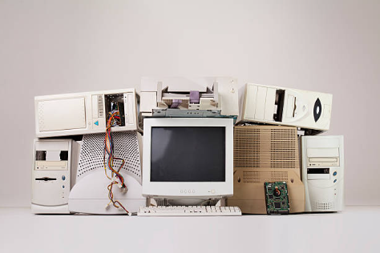
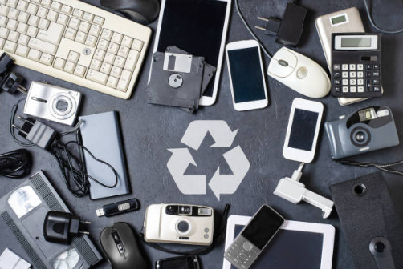
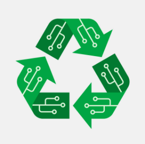

Recolección Responsable


| Programa: | Descripción: | Dirigido a: | Cómo participar: |
|---|---|---|---|
| Recolección Responsable | Organizamos campañas y puntos de acopio para recibir computadoras, celulares, tablets y otros dispositivos electrónicos en desuso. | Hogares, empresas y escuelas. | Podés acercar tus dispositivos a nuestros puntos de recolección o coordinar retiros en grandes volúmenes. |
| Reutilizar para Incluir | Recuperamos equipos electrónicos en buen estado, los reparamos y los donamos a personas o instituciones que los necesiten. | Escuelas, organizaciones sociales y personas en situación de vulnerabilidad. | Podés donar equipos o sumarte como voluntario técnico para repararlos. |
| Reciclaje Tecnológico | Desarmamos equipos irreparables para recuperar materiales reutilizables como metales, plásticos y componentes electrónicos. | Empresas, técnicos y organizaciones comprometidas con el ambiente. | Colaborá con la separación de residuos electrónicos o participá en talleres de reciclaje. |


